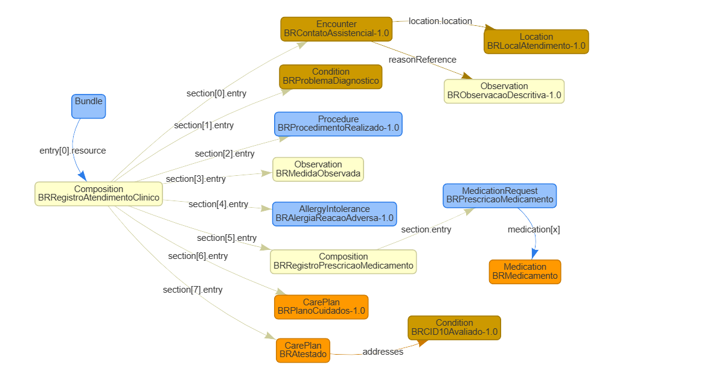
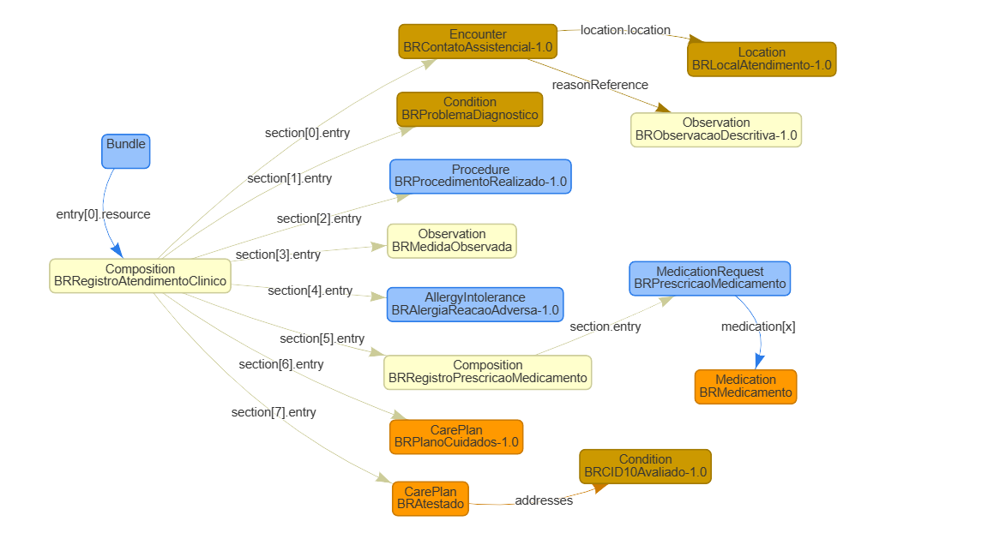

http://www.saude.gov.br/fhir/r4/CodeSystem/BRCBO
http://www.saude.gov.br/fhir/r4/CodeSystem/BRCID10
http://www.saude.gov.br/fhir/r4/CodeSystem/BRCaraterAtendimento
http://www.saude.gov.br/fhir/r4/CodeSystem/BRCategoriaDiagnostico
http://www.saude.gov.br/fhir/r4/CodeSystem/BRFinanciamento
http://www.saude.gov.br/fhir/r4/CodeSystem/BRFrequenciaUsoSubstancia
http://www.saude.gov.br/fhir/r4/CodeSystem/BRImunobiologico
http://www.saude.gov.br/fhir/r4/CodeSystem/BRJustificativaIndividuoNaoIdentificado
http://www.saude.gov.br/fhir/r4/CodeSystem/BRLocalAfericao
http://www.saude.gov.br/fhir/r4/CodeSystem/BRMedDRA
http://www.saude.gov.br/fhir/r4/CodeSystem/BRModalidadeAssistencial
http://www.saude.gov.br/fhir/r4/CodeSystem/BRMotivoDesfecho
http://www.saude.gov.br/fhir/r4/CodeSystem/BRObmCATMAT
http://www.saude.gov.br/fhir/r4/CodeSystem/BRPapelProblemaDiagnostico
http://www.saude.gov.br/fhir/r4/CodeSystem/BRProcedencia
http://www.saude.gov.br/fhir/r4/CodeSystem/BRResponsabilidadeParticipante
http://www.saude.gov.br/fhir/r4/CodeSystem/BRTabelaSUS
http://www.saude.gov.br/fhir/r4/CodeSystem/BRTipoAleitamentoMaterno
http://www.saude.gov.br/fhir/r4/CodeSystem/BRTipoDocumento
http://www.saude.gov.br/fhir/r4/CodeSystem/BRTipoIdentificador
http://www.saude.gov.br/fhir/r4/CodeSystem/BRTipoSubstanciaUso
http://www.saude.gov.br/fhir/r4/CodeSystem/BRUnidadeMedida
http://www.saude.gov.br/fhir/r4/CodeSystem/BRViaAdministracao
This fragment is not visible to the reader
Este publication inclui o IP abrangido pelas seguintes declarações.
| Type | Reference | Content |
|---|---|---|
| web | www.saude.gov.br |
IG © 2023+ Ministério da Saúde do Brasil
. Package br.gov.saude.rac.fhir#1.0.0 based on FHIR 4.0.1
. Generated 2025-08-05
Links: Table of Contents | QA Report |
| web | wiki.ihe.net | This is a metadata field from XDS/MHD . |
| web | www.gov.br | The Implementation Guide for the Clinical Care Record (RAC) of the National Health Data Network (RNDS) is a comprehensive document designed to guide various health entities, including states, municipalities, the Federal District, health establishments, and private companies, in utilizing the services developed for the RNDS. This guide aims to ensure the seamless integration of local systems with the national network for the submission of Clinical Care Records (RAC) following the HL7 FHIR R4 standard . |
| web | rnds-guia.saude.gov.br | The Implementation Guide for the Clinical Care Record (RAC) of the National Health Data Network (RNDS) is a comprehensive document designed to guide various health entities, including states, municipalities, the Federal District, health establishments, and private companies, in utilizing the services developed for the RNDS. This guide aims to ensure the seamless integration of local systems with the national network for the submission of Clinical Care Records (RAC) following the HL7 FHIR R4 standard . |
| web | www.gov.br | The RNDS is a national platform that integrates health data as part of the "Meu SUS Digital" program, which is a federal initiative to materialize Brazil's Digital Health Strategy . By leveraging cloud computing and emerging technologies, the RNDS creates a repository of health documents that stores citizens' health information in an accessible and interoperable manner. This platform not only facilitates healthcare professionals' access to patients' clinical histories, ensuring continuity of care, but also empowers individuals by providing them access to their health data. |
| web | www.gov.br | The RNDS is a national platform that integrates health data as part of the "Meu SUS Digital" program, which is a federal initiative to materialize Brazil's Digital Health Strategy . By leveraging cloud computing and emerging technologies, the RNDS creates a repository of health documents that stores citizens' health information in an accessible and interoperable manner. This platform not only facilitates healthcare professionals' access to patients' clinical histories, ensuring continuity of care, but also empowers individuals by providing them access to their health data. |
| web | en.wikipedia.org | The guide emphasizes the importance of interoperability, detailing how information exchange between digital health applications, such as electronic health records, portals, and mobile applications, is achieved through RESTful web services developed according to the FHIR R4 standard. It outlines the necessary steps for credentialing, security measures to protect transactions, and the operations required for integration with the RNDS. Additionally, it defines the information and computational models for the RAC, consolidates FHIR resources for the computational model, and provides example instances and downloadable artifacts for integrators. |
| web | servicos-datasus.saude.gov.br | A integração com a RNDS dar-se-á por meio dos serviços ( web services ) mencionados anteriormente. Para que seja possível acessar esses serviços disponibilizados no EHR Services é necessário realizar solicitação de acesso no Portal de Serviços do DATASUS . |
| web | webatendimento.saude.gov.br | Vale contextualizar que o parceiro tecnológico pode acionar a equipe técnica do DATASUS por meio do link de suporte se houver dúvidas nos testes ou algum problema no processo de integração. |
| web | acesso.gov.br | O acesso aos serviços digitais oferecidos pelo governo deve ser autenticado inicialmente pela plataforma gov.br, a qual exige uma conta que qualquer cidadão pode criar pelo portal https://acesso.gov.br . |
| web | www.gov.br | Este Guia de Implementação (IG) tem o objetivo de orientar Estados, Municípios, Distrito Federal, Estabelecimentos de Saúde ou Empresas Privadas que fornecem soluções/software na área de saúde a utilizarem os serviços (web services) que foram desenvolvidos para a Rede Nacional de Dados em Saúde (RNDS) , fornecendo as orientações técnicas necessárias para a integração dos sistemas/soluções locais com a rede, para o envio do Registro de Atendimento Clínico (RAC) seguindo as especificações do padrão HL7 FHIR versão R4 . |
| web | rnds-guia.saude.gov.br | Este Guia de Implementação (IG) tem o objetivo de orientar Estados, Municípios, Distrito Federal, Estabelecimentos de Saúde ou Empresas Privadas que fornecem soluções/software na área de saúde a utilizarem os serviços (web services) que foram desenvolvidos para a Rede Nacional de Dados em Saúde (RNDS) , fornecendo as orientações técnicas necessárias para a integração dos sistemas/soluções locais com a rede, para o envio do Registro de Atendimento Clínico (RAC) seguindo as especificações do padrão HL7 FHIR versão R4 . |
| web | www.gov.br | A RNDS é uma plataforma nacional de integração de dados em saúde que faz parte do Meu SUS Digital , um programa do Governo Federal que tem como principal missão materializar a Estratégia de Saúde Digital do Brasil . |
| web | www.gov.br | A RNDS é uma plataforma nacional de integração de dados em saúde que faz parte do Meu SUS Digital , um programa do Governo Federal que tem como principal missão materializar a Estratégia de Saúde Digital do Brasil . |
| web | pt.wikipedia.org | Para garantir a interoperabilidade entre as aplicações de Saúde Digital, em especial Prontuário(s) Eletrônico(s) do Paciente, portais e aplicações ( web e mobile ), a troca de informações ocorre por meio de serviços ( web services ) RESTful , desenvolvidos de acordo com o padrão FHIR R4 . |
| web | www.gov.br | O SUS Digital Profissional é uma plataforma desenvolvida pelo Ministério da Saúde para materializar a Estratégia de Saúde para o Brasil, e tem como objetivo a troca de informações em saúde entre profissionais de saúde de toda a rede de atenção à saúde. Dessa forma, os profissionais acessam as informações de saúde de um determinado paciente a partir de seu histórico já padronizado, sempre dentro de um contexto de atendimento. O contexto de atendimento indica que o paciente passou por atendimento em um estabelecimento de saúde com um profissional de saúde. |
| web | servicos-datasus.saude.gov.br | Com essas evidências, o solicitante pode solicitar acesso ao ambiente de produção no Portal de Serviços . |
| web | www.gov.br | Perfis dos tipos ValueSet e CodeSystem estão associados a recursos terminológicos. No contexto de Atendimento Clínico e os domínios utilizados, foram criados CodeSystems específicos definidos pelo Comitê Gestor de Saúde Digital (CGSD) . |
| web | www.in.gov.br | Portaria no. 234 de 18 de julho de 2022 |
| web | rnds-guia.saude.gov.br | https://rnds-guia.saude.gov.br/docs/rac/mi-rac |
| web | servicos-datasus.saude.gov.br | Na página da RNDS no Portal de Serviços do DATASUS há um projeto de exemplo para obtenção do token utilizando a linguagem Java . |
| web | www.java.com | Na página da RNDS no Portal de Serviços do DATASUS há um projeto de exemplo para obtenção do token utilizando a linguagem Java . |
|
acessoGov.png
|
|
estabelecimentosFilhos.png
|
|
gerenciadorCredenciais.png |
|
portalServicos.png
|
|
racMc.png  |
|
tree-filter.png
|